Elementary Fluid Mechanics
Fall 2021 - 17 Sep
Today
- Pressure measurements
- Barometer/Manometer
- Pascal's law
Hydrostatic forces on plane surfaces
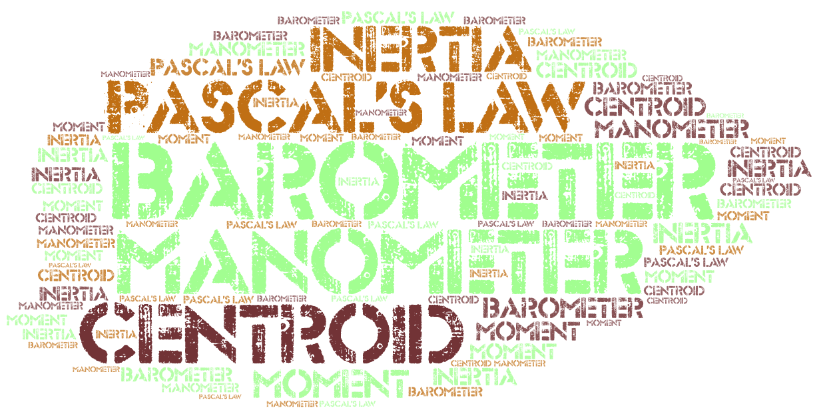
Application to manometry
Manometer: A device used to measure the pressure differences between two points using one or more liquid gases in a static column
\[ p_5 - p_1 = -\gamma_o (z_2 - z_1) - \gamma_w (z_3 - z_2) - \gamma_G (z_4 - z_3) - \gamma_M (z_5 - z_4) \]
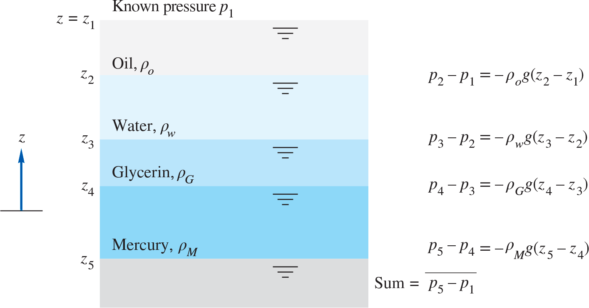
Pressure increases downward
\(p_2 - p_1 = -\gamma (z_2 - z_1)\) combines two negative signs to increase \(p\) downward
\[ p_5 - \gamma_M (z_4 - z_5) - \gamma_G (z_3 - z_4) - \gamma_w (z_2 - z_3) - \gamma_o (z_1 - z_2) = p_1 \]
Simple open manometer
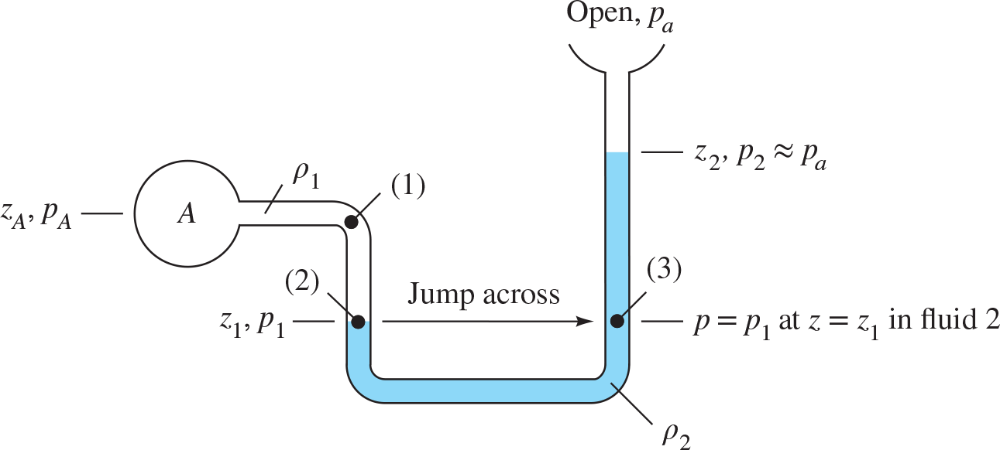
Start at A
\[ p_A + \gamma_1 | z_A - z_1 | - \gamma_2 | z_1 - z_2 | = p_2 \approx p_a \]
Any two points at the same elevation in a continuous mass of the same static fluid will be at the same pressure
Example 2.3
Derive a formula for the pressure difference \(p_a-p_b\) in terms of the system parameters.
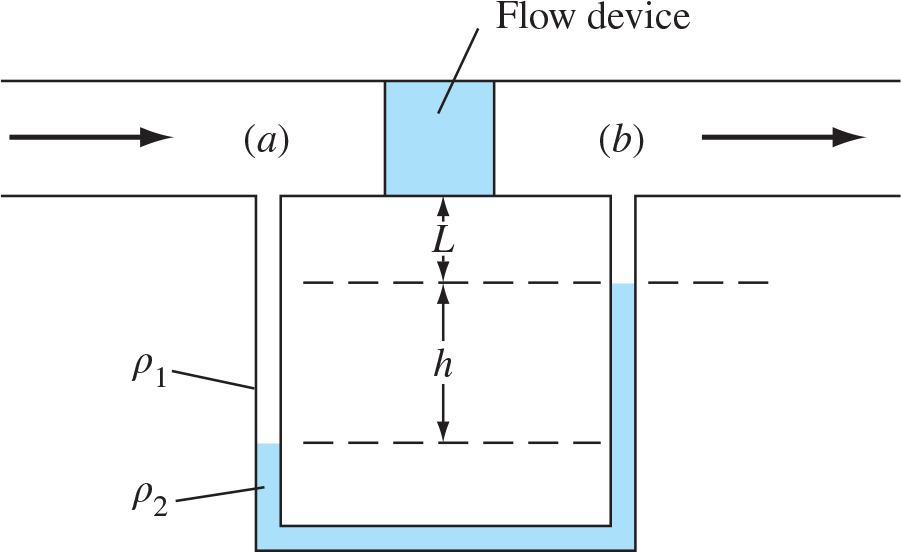
\[ p_a + \rho_1 g (L + h) - \rho_2 g h - \rho_1 g L = p_b \]
\[ p_a - p_b = (\rho_2 - \rho_1)g h \]
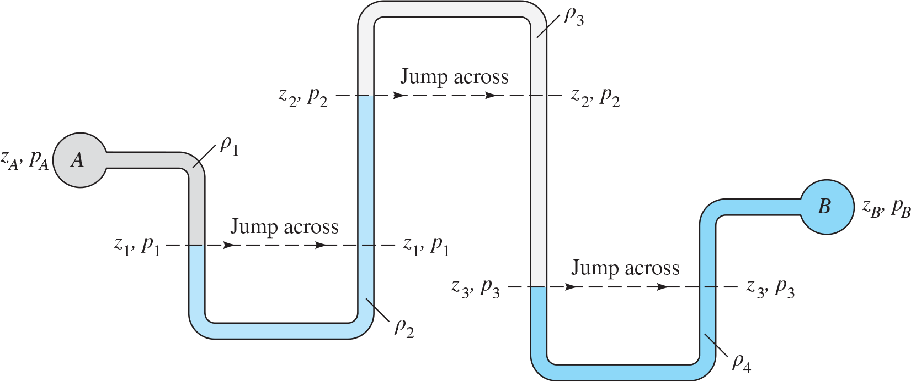
\[ p_A + \gamma_1 (z_A - z_1) - \gamma_2 (z_2 - z_1) + \gamma_3 (z_2 - z_3) - \gamma_4 (z_B - z_3) = p_B \]
\[ p_A - p_B = -\gamma_1 (z_A - z_1) + \gamma_2 (z_2 - z_1) - \gamma_3 (z_2 - z_3) + \gamma_4 (z_B - z_3) \]
Exercise
What is the pressure at A if \(p_B=87\) kPa? Specific weights for water, mercury, and oil are 9790, 133100, and 8720 N/m3 respectively.
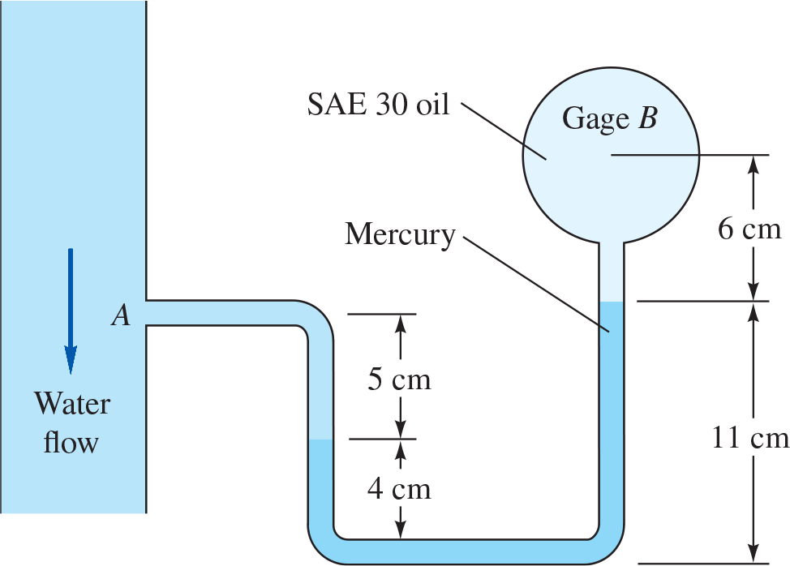
\(\gamma_w = 9790\,\mathrm{N/m^3}\), \(\gamma_m=133100\,\mathrm{N/m^3}\), \(\gamma_o=8720\,\mathrm{N/m^3}\)
\[ p_A + \gamma_w \Delta z_w - \gamma_m \Delta z_m - \gamma_o \Delta z_o = p_B \]
\[ p_A + (9790)(0.05) - (133100)(0.07) - \\(8720)(0.06) = 87000 \]
\[ p_A \approx 96.4\,\mathrm{kPa} \]
Hydrostatic forces on plane surfaces
- Design of containment structures requires calculating hydrostatic forces
- Container with flat, horizontal bottom experiences downward force \(F=\gamma h A\)
- If surface is not horizontal, additional computations are needed!
- Can still use \(p_2 - p_1 = -\gamma (z_2 - z_1)\)
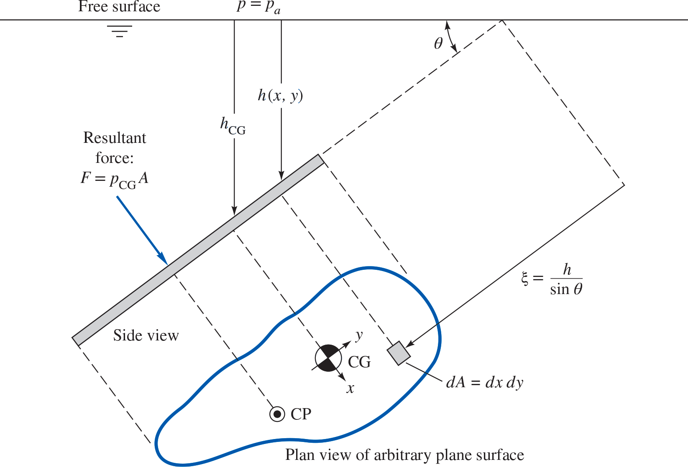
\[ F = \int p dA \]
\[ F = \int (p_a + \gamma h) dA \]
\[ F = p_a A + \gamma \int h dA \]
\[ h = \xi \sin \theta \]
\[ \xi_{CG} = \dfrac{1}{A} \int \xi dA \]
\[ F = p_a A + \gamma \sin \theta \int \xi dA \]
\[ F = p_a A + \gamma \sin \theta \, \xi_{CG} A \]
\[ F = p_a A + \gamma h_{CG} A = (p_a + \gamma h_{CG})A = p_{CG} A \]
Center of pressure
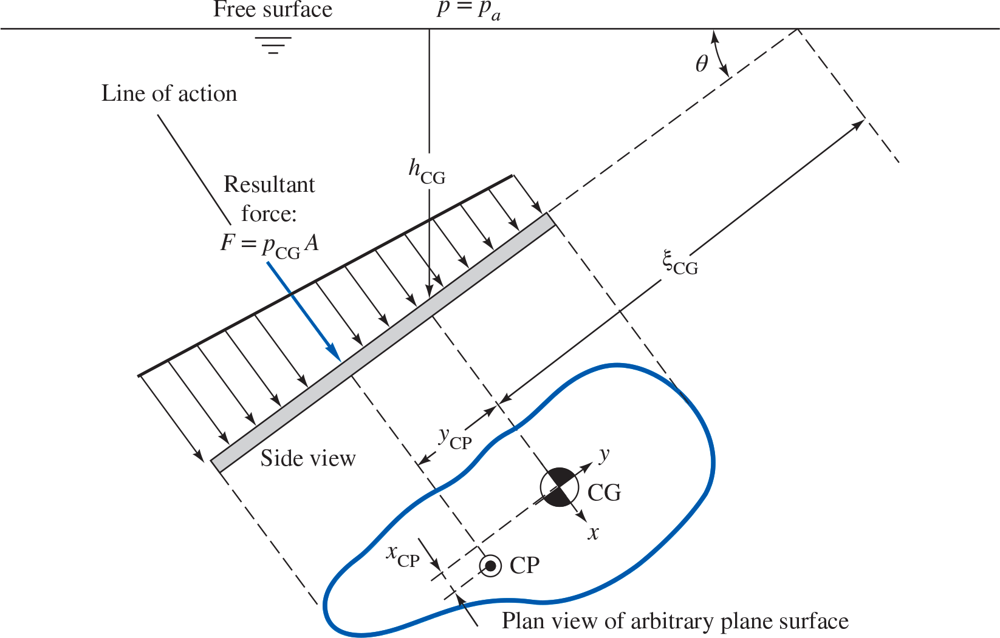
\[ y_{CP} = -\gamma \sin \theta \dfrac{I_{xx}}{p_{CG}A} \] \[ I_{xx} = \int y^2 dA \]
\[ x_{CP} = -\gamma \sin \theta \dfrac{I_{xy}}{p_{CG} A} \] \[ I_{xy} = \int x y dA \]
Gage pressure formulas
Most cases \(p_a\) can be neglected as it acts on both sides of the plate.
\[F=\gamma h_{CG} A ~~~~ y_{CP} = -\dfrac{I_{xx}\sin \theta}{h_{CG}A} ~~~~ x_{CP} = -\dfrac{I_{xy}\sin \theta}{h_{CG}A} \]
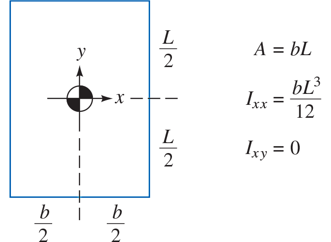

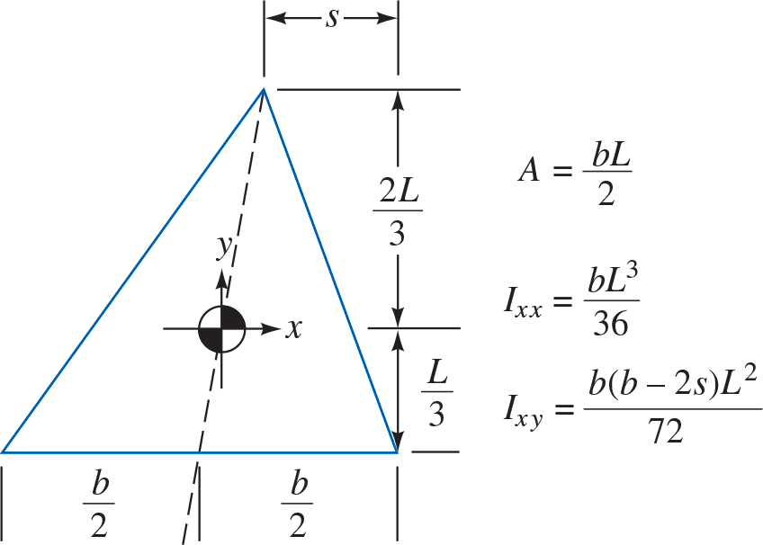 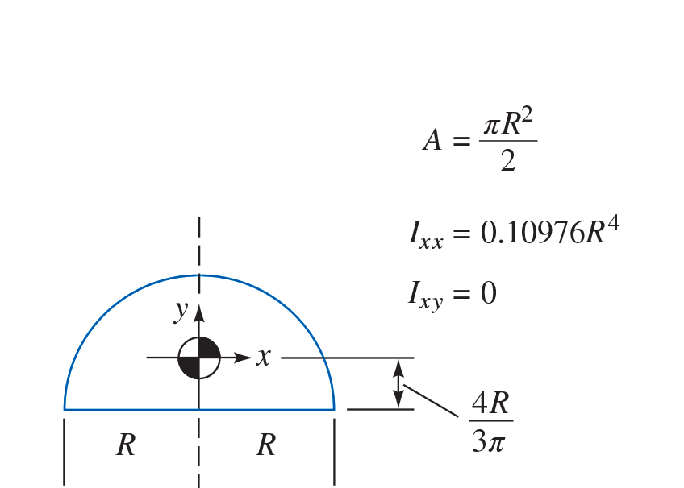
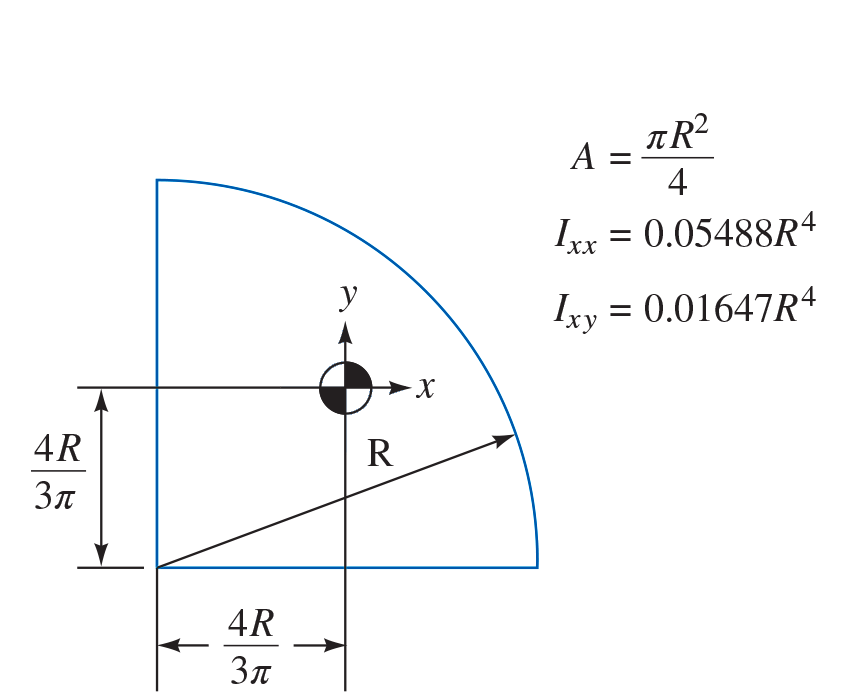

Example 2.5
Gate is 5 ft wide, hinged at point B, and rests against smooth wall at point A. Compute (a) the force on the gate due to seawater pressure, (b) the horizontal force \(P\) exerted by the wall at point A, and (c) the reactions at the hinge B.
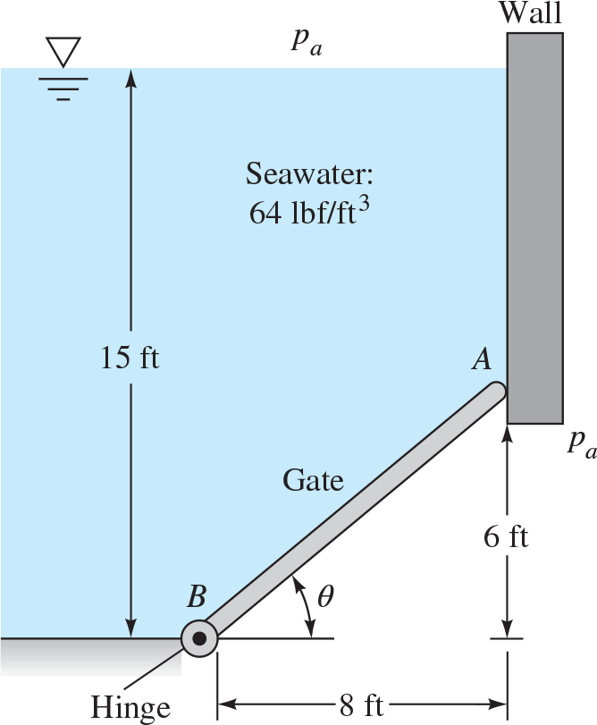
Part (a)
\[ A \rightarrow B = 10\,\mathrm{ft} \]
\[ h_{CG} = 15 - 3 = 12\,\mathrm{ft} \]
\[ F = p_{CG} A = (64\,\mathrm{lbf/ft^3})(12\,\mathrm{ft})(5\,\mathrm{ft})(10\,\mathrm{ft}) \\ = 38400\,\mathrm{lbf}\]
Part (b)
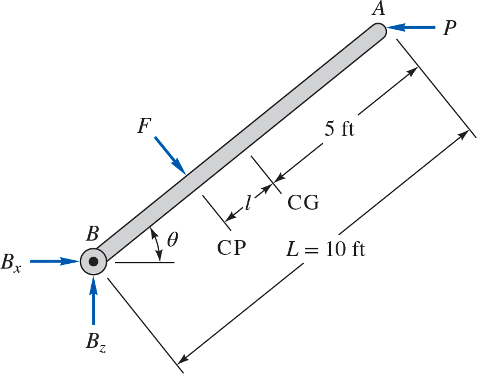
Gate is a rectangle
\[ I_{xy}=0, ~~~ I_{xx}=\dfrac{bL^3}{12}=\dfrac{(5)(10)}{12}=417\,\mathrm{ft^4} \]
\[ l = -y_{CP}=\dfrac{I_{xx}\sin \theta}{h_{CG}A}=\dfrac{417(6/10)}{(12)(50)}=0.417\,\mathrm{ft} \]
\[ P L \sin \theta - F (5 - l) = P(6) - (38400)(5-0.417) = 0 \Rightarrow \\ p=29300\,\mathrm{lbf} \]
Part (c)
\[ \sum F_{x,z} = 0 \]
\[ B_x + F \sin \theta - P = 0 \]
\[ \Rightarrow B_x = 29300 - (38400)(0.6) = 6300\,\mathrm{lbf} \]
\[ B_z - F \cos \theta = 0 \]
\[ \Rightarrow B_z = (38400)(0.8) = 30700\,\mathrm{lbf} \]
Example 2.7
A tank of oil has a right-triangular panel near the bottom. Omitting \(p_a\), find the (a) hydrostatic force and (b) CP on the panel.
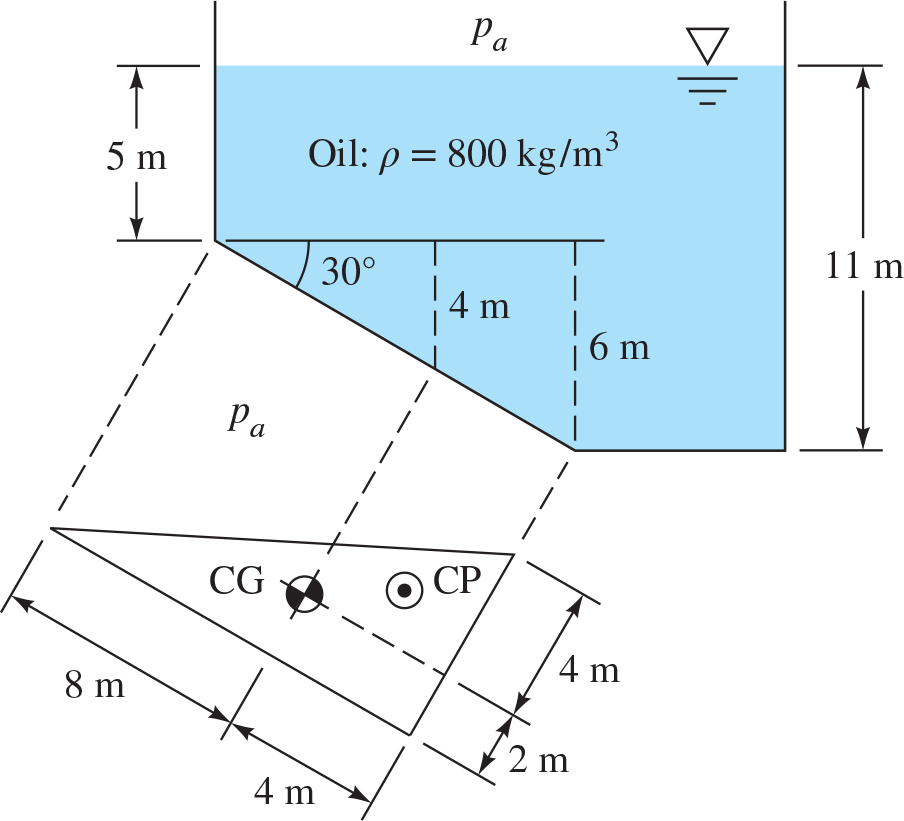
Part (a)
Area is \(\dfrac{1}{2}(6\,\mathrm{m})(12\,\mathrm{m})=36\,\mathrm{m^2}\)
\[ I_{xx} = \dfrac{bL^3}{36} = \dfrac{(6)(12)^3}{36}=288\,\mathrm{m^4} \]
\[ I_{xy} = \dfrac{b(b-2s)L^2}{72}=\dfrac{(6)[6-2(6)](12)^2}{72}=-72\,\mathrm{m^4} \]
\[ F = \rho g h_{CG} A = (800\,\mathrm{kg/m^3})(9.81\,\mathrm{m/s^2})(5+4\,\mathrm{m})(36\,\mathrm{m^2}) \\ = 2.54\times 10^6\,\mathrm{N} \]
Part (b)
\[ y_{CP} = -\dfrac{I_{xx}\sin \theta}{h_{CG} A} = -\dfrac{(288\,\mathrm{m^4})(\sin 30\mathrm{^{\circ}})}{(9\,\mathrm{m})(36\,\mathrm{m^2})} = -0.444\,\mathrm{m} \]
\[ x_{CP} = -\dfrac{I_{xy} \sin \theta}{h_{CG}A} = -\dfrac{(-72\,\mathrm{m^4})(\sin 30\mathrm{^{\circ}})}{(9\,\mathrm{m})(36\,\mathrm{m^2})} = 0.111\,\mathrm{m} \]